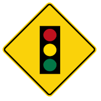

Early Traffic Control Measures
The concept of traffic control dates back to ancient civilizations, where traffic was managed through the use of hand signals, flags, and even simple road signs. In the 18th century, London employed traffic officers known as "link-boys" who used lanterns to direct horse-drawn carriages and pedestrians.
The Gas-Powered Traffic Light (1868)
The first documented traffic control device resembling a modern traffic light was developed by J.P. Knight, a British railway engineer, in 1868. Knight's design used gas lamps with red and green lights, operated manually by a police officer.
Electric Traffic Lights (1912)
 The first electric traffic lights were installed in Salt Lake City, Utah, in 1912. They were designed by Lester Wire, a police officer. These early electric lights had only red and green signals and were manually operated.
The first electric traffic lights were installed in Salt Lake City, Utah, in 1912. They were designed by Lester Wire, a police officer. These early electric lights had only red and green signals and were manually operated.
Introduction of the Yellow Signal (1920s)
The yellow or amber signal was introduced to traffic lights in the 1920s to provide a transition period between red and green, improving safety and reducing accidents.
Introduction of Automated Signals (1920s-1930s)
The next major milestone was the development of automated traffic signal systems, which used timers to control the changing of lights rather than manual operation. Innovations in traffic signal technology led to more efficient traffic flow and reduced congestion.
Signal Evolution (1940s-Present)
 Over the decades, traffic signals continued to evolve with the addition of features like pedestrian signals, left-turn signals, and advanced control systems. The adoption of LED technology in traffic lights improved energy efficiency and visibility.